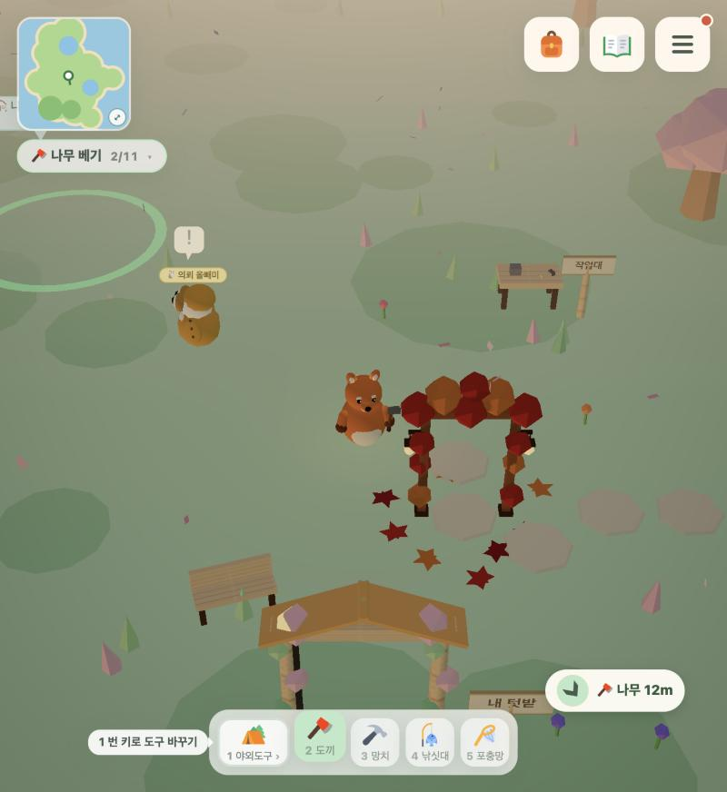

다음 목적지 안내, 어떻게 이어지나
한 단계를 끝내거나 새 곳이 열리면, 짧게 날아가 보여 주고 지도 핀으로 데려갑니다. 커밋 add369d8, 아직 배포 전.
모든 단계에서 똑같이 도는 4박자
단계 끝 · 해금목표가 하나로 바뀜. 동시에 둘 이상 안내하지 않음
날아가 보기 1.6초0.6초 뒤 시작, 아래에 "다음 목적지 · 🪓 나무 베기". 탭하면 넘김. 목적지마다 한 번만
지도 핀 따라가기보이면 목적지 위 핀+거리, 안 보이면 화면 끝 칩이 방향을 가리킴. 건물에 막히면 돌아가는 쪽을 가리킴
도착하면 사라짐버튼이 닿는 거리 안에서만 도착 처리. 그다음 단계로
튜토리얼 순서 (①~⑪)
- ① 걷고 행동하기안내 없음
조작 투어가 맡음
- ② 나무 베기날아가 보기핀
주민과 5m 이상 떨어진 가장 가까운 나무로. 첫 도끼질이 대화로 새지 않게
- ③ 상인 맞이하기핀고침
목재 5개 전까진 나무로 안내. 상인은 8초 안에 못 오면 내 옆에 나타나 제안창을 엶. 집 바닥 몫 15개는 안 사 감("집부터 짓게")
- ⑤ 집 바닥 깔기실험 쪽 안내 유지순서 앞당김
동굴보다 먼저. 집 안내 50:50 실험이 끝날 때까지 새 안내는 끔
- ④ 동굴 탐험하기 → 돌 캐기날아가 보기핀
마을에선 동굴 입구로, 안에 들어가면 가장 가까운 돌로
- ⑥ 벽 세우기날아가 보기핀
집 터로
- ⑦ 밭 가꾸기날아가 보기핀
텃밭 문으로. 도착하면 "내 텃밭"이 바로 눌림
- ⑧ 지붕 올리기날아가 보기핀
집 터로. 망치 사거리 안에서 도착
- ⑨ 새 옷 고르기날아가 보기핀
꾸미기 가게 문으로
- ⑩ 다리 고치기날아가 보기핀
무너진 다리 머리로. 도착하면 수리 버튼
- ⑪ 할아버지 만나기날아가 보기핀
섬 밖이면 다리를 거쳐 박물관 할아버지에게
튜토리얼 밖 두 줄기
- 동굴 · 광부 의뢰석탄만 날아가 보기
⚫ 석탄 캐기(3개까지) → ⛏️ 광부에게 가기 → 🛗 승강기 타기(날아가 보기) → 1층에 내려가면 안내 끝
- 세계수 · 밭의 가지날아가 보기핀
물의 가지 빈터를 끝내면 🌾 밭의 가지 살리기 → 세계수로 → 판이 밭 탭으로 열리고 추천 조합 표시 → 안내 끝. 칸이 꽉 차 모자라면 "놓인 칸을 눌러 빼고 추천대로 다시 놓아요"
실제 화면




남는 기록 (GA4)
| 이벤트 | 언제 | 파라미터 |
|---|---|---|
guide_step | 안내 시작 · 날아가 보기 · 넘김 · 도착 · 완료 | flow, goal, act, step, dist |
tree_tab | 세계수 판에서 탭을 바꿀 때 | branch, from |
배포 전에 남은 것
커밋만 했고 푸시·배포는 아직 안 했습니다. 배포할 땐 5곳 모두, 튜토리얼 순서를 바꾼 날짜를 집 안내 실험 기록에 남깁니다. 다음 날 guide_step·tree_tab이 BigQuery에 들어왔는지 확인합니다.